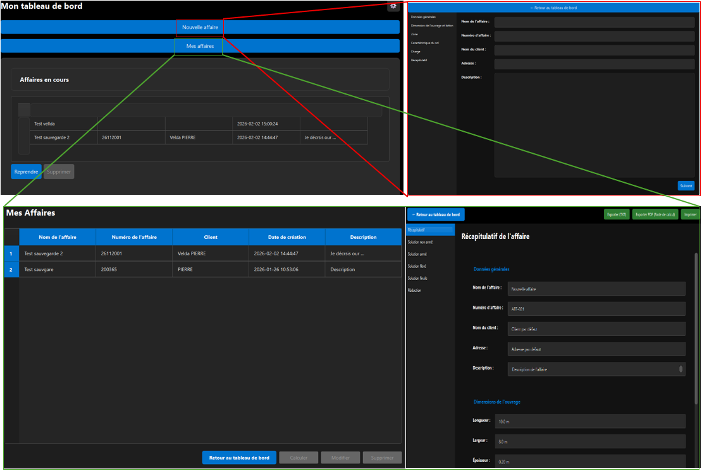

Retour aux projets
Outil de dimensionnement d'un dallage industriel

Contexte
Ce projet consiste en la création d’un outil de calcul Python avec une interface graphique intuitive pour remplacer un logiciel obsolète. L’objectif était de moderniser et automatiser des processus métier complexes, en offrant une solution fiable, rapide et facile à utiliser.
Objectifs
- Automatiser les calculs et réduire le temps de traitement des données
- Créer une interface utilisateur intuitive et accessible
- Générer des résultats exploitables et documentés qui respectent les normes en vigueur
Fonctionnalités
- Interface graphique développée avec Tkinter/PyQt
- Calculs automatisés avec validation des données
- Export des résultats en différents formats (Excel, PDF)
- Gestion des erreurs et messages informatifs
Technologies utilisées
Python, Tkinter/PyQt, Pandas, NumPy, openpyxl
Résultats
L'outil a permis de réduire significativement le temps de traitement des calculs, passant de plusieurs heures à quelques minutes. La fiabilité des résultats a été améliorée grâce à l'automatisation, et l'interface graphique a facilité l'adoption par les utilisateurs finaux.